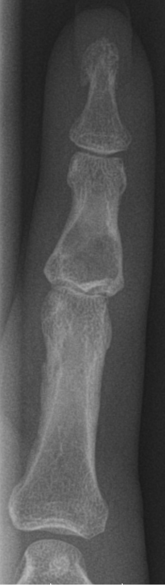

Ficha del catálogo
Encondroma
- Sistema
- Óseo
- Modalidad
- RX
- Región
- Mano
- Dificultad
- Intermedio
El encondroma es un tumor benigno formado por cartílago hialino maduro que crece dentro de la cavidad medular. Es la lesión ósea más frecuente de los huesos tubulares cortos de las manos y también aparece en fémur, húmero y tibia. Suele descubrirse por casualidad o tras una fractura patológica por un traumatismo mínimo. Su importancia radica en saber cuándo un tumor cartilaginoso deja de comportarse como benigno y exige estudio adicional.
Técnica
Radiografía en dos proyecciones del segmento afectado, con especial atención a la cortical. En huesos largos conviene ampliar el estudio con imagen seccional.
Qué observar
- Lesión lítica bien delimitada en la cavidad medular con leve expansión
- Calcificaciones puntiformes o en anillos y arcos dentro de la lesión
- Festoneado endóstico superficial, menor que dos tercios del grosor cortical
- Ausencia de rotura cortical y de masa de partes blandas
- Ausencia de reacción perióstica salvo que exista fractura
- Trazo patológico transversal sobre la lesión en caso de fractura
Hallazgos
Lesión lítica intramedular bien definida con calcificaciones de matriz cartilaginosa, expansión leve del hueso y cortical íntegra.
Perlas
En los huesos cortos de la mano el encondroma se comporta de forma benigna casi siempre, mientras que en el esqueleto axial y en los huesos largos proximales las lesiones cartilaginosas exigen más cautela. El dolor no mecánico, el crecimiento documentado, el festoneado endóstico profundo y la masa de partes blandas orientan a condrosarcoma.
Diagnóstico diferencial
- Condrosarcoma de bajo grado
- Festoneado endóstico profundo, tamaño mayor, dolor y crecimiento en los controles.
- Infarto óseo
- Borde serpiginoso esclerótico bien definido sin expansión ni festoneado.
- Quiste óseo simple
- Lesión central sin matriz calcificada y con contenido líquido.
Simuladores
- Islote óseo denso
- Zona de médula grasa con trabéculas escasas
- Superposición de partes blandas calcificadas
Por modalidad
- RX
- Suficiente en lesiones típicas de manos y pies
- TC
- Valora la matriz calcificada y el grosor cortical con precisión
- RM
- Muestra los lóbulos cartilaginosos brillantes y detecta masa de partes blandas
Protocolo
Dos proyecciones ortogonales del hueso afectado. En huesos largos o ante datos atípicos se completa con resonancia y controles evolutivos.
Clasificación
La presencia de múltiples encondromas define un cuadro de encondromatosis, que aumenta el riesgo de transformación maligna respecto a la lesión solitaria.
Errores frecuentes
- Aplicar a los huesos largos los mismos criterios de benignidad que a la mano
- No valorar el grado de festoneado endóstico
- Interpretar el edema y la reacción perióstica de una fractura patológica como agresividad tumoral

encondroma tumor cartilaginoso matriz condroide festoneado endostico fractura patologica mano benigno